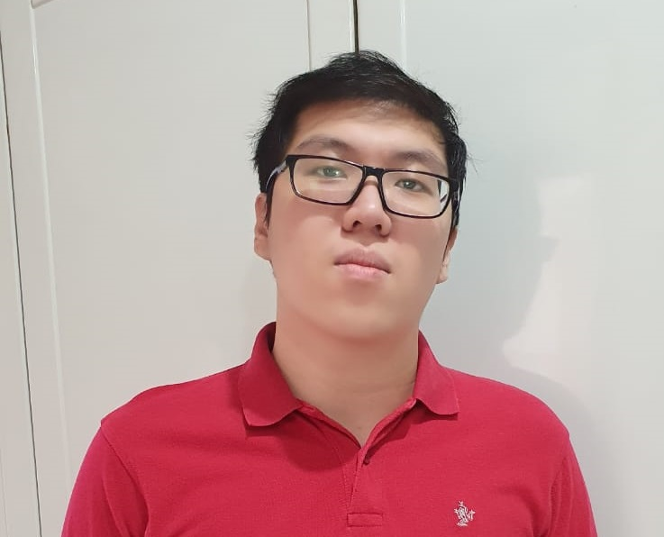

Chris Ardiansyah
Profil Singkat
Mahasiswa yang sedang menjalani pendidikan S1 jurusan Informatika. Memilih jurusan Informatika karena tertarik tentang bagaimana komputer dapat membuat dan menjalankan program, terutama di bidang permainan.
Selama menjalani kuliah pernah mengikuti beberapa kontes. Kontes yang pernah diikuti antara lain ICPC INC dan ICPC Asia Jakarta Regional Contest.
Biodata
Chris lahir pada tanggal 4 November 1978 di Makassar Surabaya.
Motto Hidup
If you judge people, you have no time to love them.
- Mother Teresa